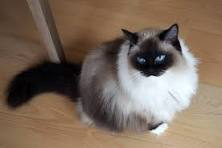

Ragdoll je druhá největší rasa koček domácích na světě, hned po mainské mývalí kočce. Patří mezi polodlouhosrsté kočky a velikostně se řadí mezi středně velká plemena. Tělo těchto koček má působit mohutným dojmem. Kočky váží jen 4–7 kg, kdežto kocouři něco mezi 6–10 kg a jejich délka může dosahovat až jednoho metru. Povahou jsou poměrně tiché, nevyžadují náročné hry, spíše preferují klidné posezení na klíně a pozorování okolí kolem nich.
 WikipedieRagdoll kočka patří mezi jedno z největších a nejvíce okouzlujících kočičích plemen. V překladu z angličtiny „rag doll“ znamená „hadrová panenka“, což toto plemeno dokonale vystihuje. Patří mezi polo dlouhosrsté kočky a je to velmi klidná, trpělivá a inteligentní kočka, která má přítulnou povahu a pro její nenáročnost je vhodná jako domácí mazlíček pro rodiny s dětmi i seniory, a také pro všechny, kdo se rády mazlí. Pokud hledáte klidného, mazlivého a nenáročného společníka, ragdoll kočka je pro vás ideální volbou. Jsou to úžasné kočky, které si získají srdce celých rodin a stanou se věrnými přáteli na dlouhá léta.